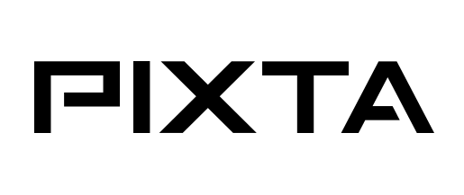
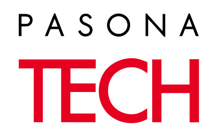
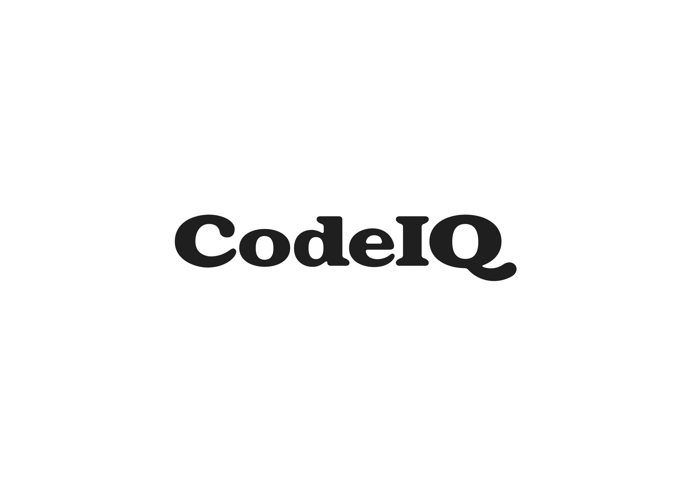

こんにちは世界！
Rails Girls Tokyo が再び開催されます!
今回は、国内最大のRubyカンファレンスRubyKaigi 2014の
翌日に開催されます。
同じ会場では、他のワークショップも行われ、色々なRubyの世界を垣間見ることができます!
第４回 Rails Girls Tokyoの参加者を募集します。
今回は1日のみのワークショップとなります。
Ruby on Railsのすてきな世界を体験してみませんか？ワークショップは無料です。
たくさんのご応募をいただきました。ありがとうございます。 応募多数につきまして、抽選とさせて頂きます。 抽選の結果は、8月30日までにご連絡致します。
Hello world!
Rails Girls Tokyo is back again!
This time, we are going to do it on 21 September 2014(Sun),
the day after RubyKaigi2014!
Join the one-day crash-course and learn how to build web applications using Ruby on Rails, and we'll dive into the magical world of Ruby on Rails.
Application was closed on 21st of August. Thank you!
概要 コーチに教えてもらいながらプログラムを設計して、プロトタイプを作り、コーディングします。
必要なもの 自分のノートパソコン、やる気とキラリと光るイマジネーションを持ってきてください！
たくさんのコーチのお申し出をいただきました。ありがとうございます。
| 9:30 - 10:00 |
レジストレーション、インストールまずは参加者同士、お互い知り合いになりましょう。 それぞれのパソコンにRuby とRails をインストールし、 Rubyプログラミングの最初の一歩をコーチとともに始めてみましょう。 |
|---|---|
| 10:00 - 10:15 |
開会一日の流れの説明。オーガナイザーから一言。 |
| 10:20 - 10:45 |
ワークショップ ー ウェブアプリの設計 |
| 10:45 - 10:55 |
休憩・質問タイム |
| 10:55 - 13:00 |
ワークショップ ー ウェブアプリ構築はじめてのウェブアプリにトライしてみよう！ |
| 13:00 - 14:00 | ランチ |
| 14:00- 14:40 |
スポンサーLT |
| 14:40 - 16:45 |
ワークショップ自分流のウェブアプリに変えてみよう！ |
| 16:45 - 17:00 |
閉会 |
| 18:00 - |
アフター・パーティ参加者、コーチ、スタッフによるパーティです。ワークショップで聞き損ねたことや RubyやRailsのこと、ステップアップの方法など、コーチに気軽に質問してみましょう。 |
参加申し込みは締め切らせていただきました。たくさんのご応募ありがとうございました。
締め切り: 8月21日
参加了承の連絡:8月30日
会場:
株式会社サイバーエージェント 地図
東京都渋谷区道玄坂1丁目12番1号 渋谷マークシティ ウエスト 13階
会場までの道順は、こちらをご覧ください。
Rails Girls Tokyo は以下のすばらしいパートナーとの共同開催です。
多数のご支援のお申し出をいただき、ありがとうございました!
 株式会社spice lifeはECを通して世の中に笑顔を増やすサービスを作ります。spice lifeで開発するのはECの分野、ちょっと変わった、ちょっと新しい、ちょっと世の中を良くするようなECです。もちろんRailsで開発しています。オリジナルTシャツ作成サービスtmixは各地のRailsGirlsのスタッフTシャツ作成もしています。
株式会社spice lifeはECを通して世の中に笑顔を増やすサービスを作ります。spice lifeで開発するのはECの分野、ちょっと変わった、ちょっと新しい、ちょっと世の中を良くするようなECです。もちろんRailsで開発しています。オリジナルTシャツ作成サービスtmixは各地のRailsGirlsのスタッフTシャツ作成もしています。
 株式会社万葉 は「楽しく、役に立つ開発」をモットーに、Ruby on Rails によるWebアプリケーション開発や、スマートフォンアプリの開発サービスを提供しています。開発実績はEC、グループウェア、業務アプリケーション、ゲームなど。万葉はRubyコミュニティと共に成長していきたいと考えています。
株式会社万葉 は「楽しく、役に立つ開発」をモットーに、Ruby on Rails によるWebアプリケーション開発や、スマートフォンアプリの開発サービスを提供しています。開発実績はEC、グループウェア、業務アプリケーション、ゲームなど。万葉はRubyコミュニティと共に成長していきたいと考えています。
Rails技術者認定試験運営委員会Railsの技術者認定試験を全国100か所の試験会場で1年中実施しています。 いよいよこの秋にRails4シルバー試験を実施します。乞うご期待！ また、認定スクールも募集しています。認定スクールは認定教材を無料で使えます。
GMOペパボ株式会社は「もっとおもしろくできる」を企業理念としてホスティングサービスであるロリポップ！やドメインサービスであるムームードメインなどを運営しています。Ruby と Rails を採用した新しいサービスの開発はもちろんのこと、開発者やコミュニティの支援も積極的に行っています。
 株式会社ケーシーエスキャロットは、 「Create(創造)・Cooperate(協力)・Coordinate(調和)・Collaborate(共争)」を経営ビジョンとして、
デジタル放送機器、音楽・ニュースの配信分野、AV機器の組込みソフトや、
Webアプリケーション開発などを取り組んでおります。
現在、Railsによる自社製品開発に鋭意取り組み中！
株式会社ケーシーエスキャロットは、 「Create(創造)・Cooperate(協力)・Coordinate(調和)・Collaborate(共争)」を経営ビジョンとして、
デジタル放送機器、音楽・ニュースの配信分野、AV機器の組込みソフトや、
Webアプリケーション開発などを取り組んでおります。
現在、Railsによる自社製品開発に鋭意取り組み中！
PIXTA は、2006年にスタートした日本最大級の写真・イラスト・動画素材販売プラットフォームです。国内外のクリエイターが計800万点以上の素材を販売中。1点525円～の低価格と高品質・幅広い品揃えで約16万人のカスタマーに愛用されています。 Rails on AWS で約20名のエンジニア（うちインフラ3名）が開発をしています。
 株式会社インターネットイニシアティブ 私たちIIJは、 MOGOKという少し変わった名前のRubyのPaaSを、国内のレスポンスのいい環境と安心の日本語サポートで提供しています。 MOGOKは「コンピュータに使われる人」ではなく「コンピュータを使う人」でありたいと願うすべてのRubyプログラマを支援します。
株式会社インターネットイニシアティブ 私たちIIJは、 MOGOKという少し変わった名前のRubyのPaaSを、国内のレスポンスのいい環境と安心の日本語サポートで提供しています。 MOGOKは「コンピュータに使われる人」ではなく「コンピュータを使う人」でありたいと願うすべてのRubyプログラマを支援します。
株式会社パソナテックは、ITのチカラで世界を変えるエンジニアのキャリア創造を支援しています。理想のキャリアを築くための仕事情報や各種スキルアップメニューの提供、また多様なワークスタイルを実現するクラウドソーシングサービス「Job-Hub」を運営しています。大好評の転職支援付きRubyスキル習得プログラム「Rails Plus」の第2回を10月にスタートします！
 日本Rubyの会は、Rubyの利用者の支援とRuby(とRubyのライブラリ)開発者の支援を目的とした一般社団法人です。現在は、ドキュメントの整備や、イベントへの参加協力等を中心に活動しています。
日本Rubyの会は、Rubyの利用者の支援とRuby(とRubyのライブラリ)開発者の支援を目的とした一般社団法人です。現在は、ドキュメントの整備や、イベントへの参加協力等を中心に活動しています。
CodeIQ（コードアイキュー）は、自分の実力を知りたいITエンジニア向けの、実務スキル評価サービスです。CodeIQサイトでは、エンジニアに向けて、面白くて、解きがいのある問題を多数ご用意しています。ぜひ気になる問題に挑戦してみてください！楽しく問題を解くことで、プログラミングについての新しい視点や知識が得られるかもしれません。
 私たち永和システムマネジメントは Ruby や Ruby on Railsを活用したアプリケーションをアジャイルに構築できる日本有数のソフトウェア受託企業です。私たちはお客さまの投資を最大化すべく研鑽を続けています。また、Rubyコミュニティの支援も2006年から積極的に行っています。
私たち永和システムマネジメントは Ruby や Ruby on Railsを活用したアプリケーションをアジャイルに構築できる日本有数のソフトウェア受託企業です。私たちはお客さまの投資を最大化すべく研鑽を続けています。また、Rubyコミュニティの支援も2006年から積極的に行っています。
参加費はどのくらいかかりますか？ 無料です。申し込むときにはわくわくした気持ちだけあればいいです。
どのような人が参加するのでしょうか？ コンピュータを使ったことがある女性ならだれでも参加できます。これまでに開催されたRails Girlsイベントには様々な年齢の女性がやってきました。ご自分のノートパソコンをお持ちください。
男性も参加できますか？ 参加できます。ただし、必ずウェブアプリを作りたがっている女性と一緒に参加してください。申し込み人数が多い場合はお断りすることがあります。
プログラミングの経験があります。手伝うことはできますか？たくさんのご協力のお申し出をいただきまして、ありがとうございました!現在、コーチの募集は終了しております。次回以降のRails Girlsのコーチにご興味をおもちの方は、オーガナイザーまでお声がけ下さい。
 Mayumi Emori
Mayumi Emori Yuki Torii
Yuki Torii Wakana Odagiri
Wakana Odagiri Hiroshi Shibata
Hiroshi Shibata Shintaro Kakutani
Shintaro Kakutani Keiko Fujii
Keiko Fujii Akiko Kashiwabara
Akiko Kashiwabara Kuniaki Igarashi
Kuniaki Igarashi Yuumi Yoshida
Yuumi Yoshida Chihiro Nishihara
Chihiro Nishihara Hideki Ohkubo
Hideki Ohkubo Hidenori Miyoshi
Hidenori Miyoshi Toru Kawamura
Toru Kawamura Yuta Kurotaki
Yuta Kurotaki Taiki Takayama
Taiki Takayama Yuuki Ishikawa
Yuuki Ishikawa Haruka Yoshihara
Haruka Yoshihara Misaki Miura
Misaki Miura Ohtsuka Takahiro
Ohtsuka Takahiro Kozue Araki
Kozue Araki Haruka Hataoka
Haruka Hataoka Aya Ooki
Aya Ooki Takehiro Sugita
Takehiro Sugita Yoh Osaki
Yoh Osaki